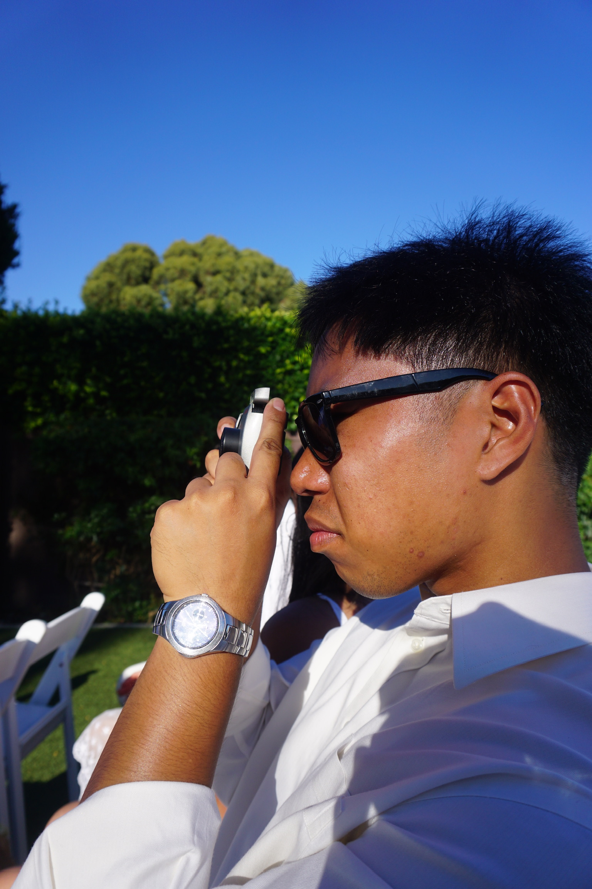
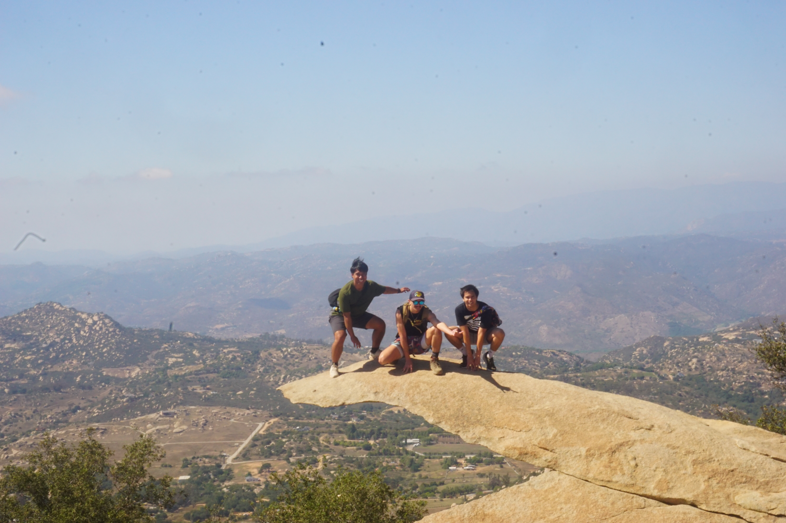

Who am i?

Do I have everything figured out? No, but I think thats the beauty of living. Right now, I am currently a senior computer science major at UCSD and I am graduating in July, 2027. Hopefully this website shows you that a path to your aspirations isn't a straight line, its curved and you have to calculate the slope of at every point and evaluate whether the point on this line exists or whether you're wasting your time.
Life isn't all screens and technology
But it sometimes is..
Going outside!
Should you travel? Yes! Is it expensive? Hell yes. I have been 5 different countries in my life and no matter where I am I always try to explore new places. Heres a glimpse of where I have been.
Here is some photos of my travels!


Dragon Boat (yes that one sport)
Yes I know youre wondering what this sport is and tbh all I can tell you is to search up aura farming kid on a boat on tiktok and thats all you need to know. But, seriously, this sport has opened my world so much and I've experienced more in these last two years then the years before that combined.

Mechanical Keyboards
I've built over 10 keyboards myself and have spent a questionable amount of money but it was worth it. Heres a few of my favorite builds.
My addiction (rocket league)
Rocket league is the most mechanical video game out there, argue with a wall. Genuinely, unlike other games, most people will never reach the highest ranks unless they put an unhealthy amount of hours into the game. Its unlike any game I have played before which is why I am still playing it 3 years later.